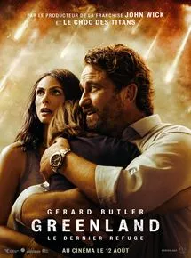

Muni d'un seul mot – Tenet – et décidé à se battre pour sauver le monde, notre protagoniste sillonne l'univers crépusculaire de l'espionnage international. Sa mission le projettera dans une dimension qui dépasse le temps. Pourtant, il ne s'agit pas d'un voyage dans le temps, mais d'un renversement temporel…
Greenland

Affiche du film
Une comète est sur le point de s’écraser sur la Terre et de provoquer un cataclysme sans précédent. John Garrity décide de se lancer dans un périlleux voyage avec son ex-épouse Allison et leur fils Nathan pour rejoindre le dernier refuge sur Terre à l’abri du désastre. Alors que l’urgence devient absolue et que les catastrophes s’enchainent de façon effrénée, les Garrity vont être témoin du meilleur comme du pire de la part d’une humanité paniquée au milieu de ce chaos.